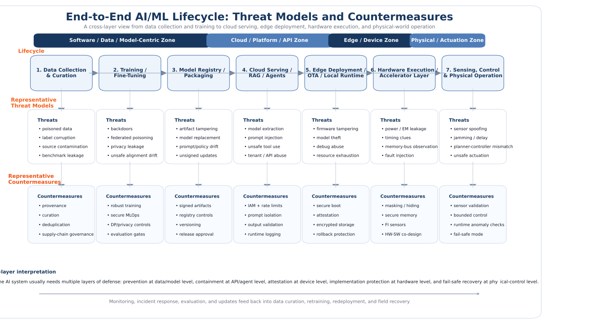

Memory Hierarchy for AI
Many AI workloads are limited less by raw arithmetic than by moving data efficiently. Weights, activations, partial sums, KV caches, optimizer states, and communication buffers all compete for limited bandwidth and locality. A serious security analysis therefore needs to understand the memory hierarchy as a first-class design dimension.
What this topic covers
Modern AI execution spans registers, local SRAM or shared memory, on-chip caches, off-chip HBM or DRAM, host memory, and sometimes storage-backed staging. The goal of the accelerator stack is to keep data as close to compute as possible for as long as possible.
This matters for security because memory movement creates observable structure. Burst patterns, cache residency, reuse distance, bandwidth pressure, allocation size, and spill behavior can reveal information about model shape, sequence length, batch size, sparsity, and runtime phase. Memory is therefore both a performance bottleneck and a leakage surface.
Research significance
- Data movement often dominates energy, latency, and throughput in modern AI pipelines.
- Off-chip traffic can expose model structure and workload phase more clearly than arithmetic utilization alone.
- Security assumptions break when sensitive states such as weights, activations, or KV caches move across trust boundaries.
- Memory-aware analysis is essential for side-channel evaluation, co-tenant leakage studies, and fault targeting.

Later you can replace this with a memory-stack diagram showing registers, local SRAM, cache, HBM, host DRAM, storage, and the points where AI workloads stall, spill, synchronize, or leak information.
Key technical questions
A memory-centric view often changes how one interprets both performance and security in AI systems.
Threat model
Can an attacker observe memory traffic, cache contention, allocation patterns, DMA bursts, or reuse behavior? If yes, the memory hierarchy itself becomes part of the attack interface.
System constraints
Different workloads stress memory differently. Training stores optimizer state and activations, while LLM inference stresses KV-cache growth, batching, and long-context behavior.
Open direction
An important research direction is to design abstractions that map model operations to memory signatures in a way that is accurate enough for security analysis but general enough to remain useful across hardware generations.
Back to research map
Return to the structured research map and browse other AI security and foundation topics.